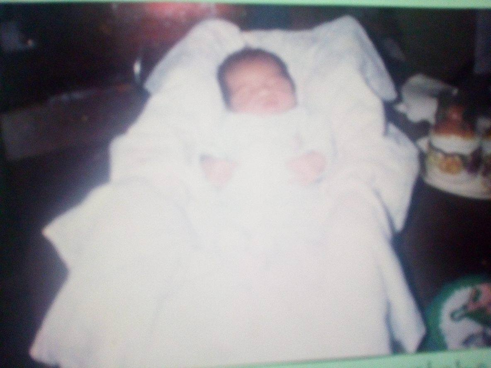
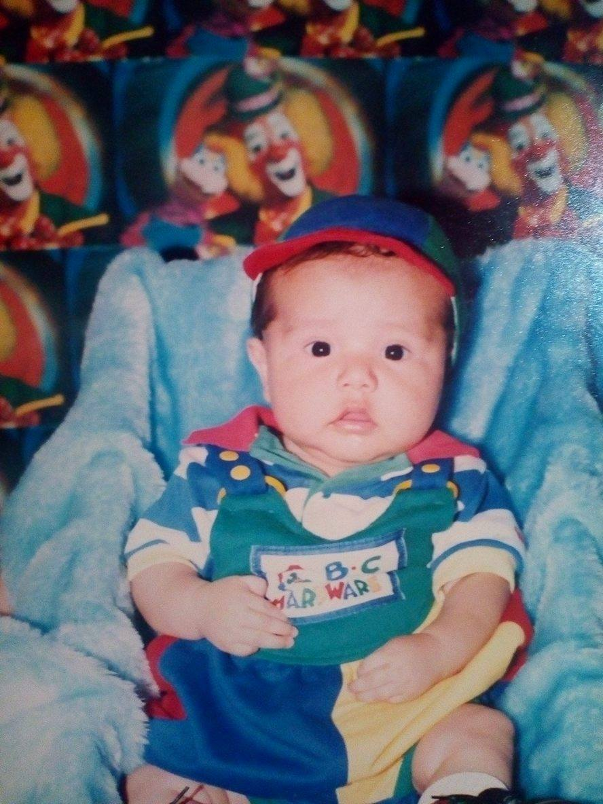
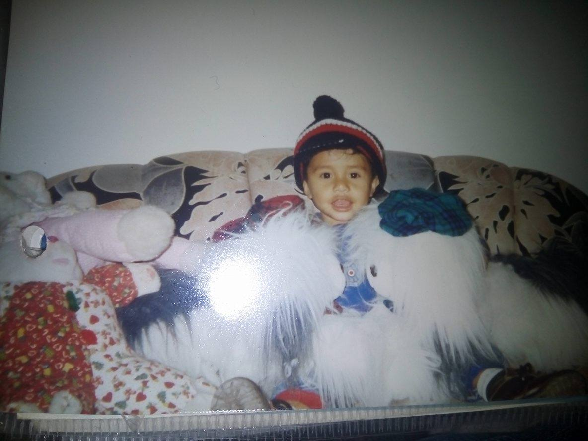
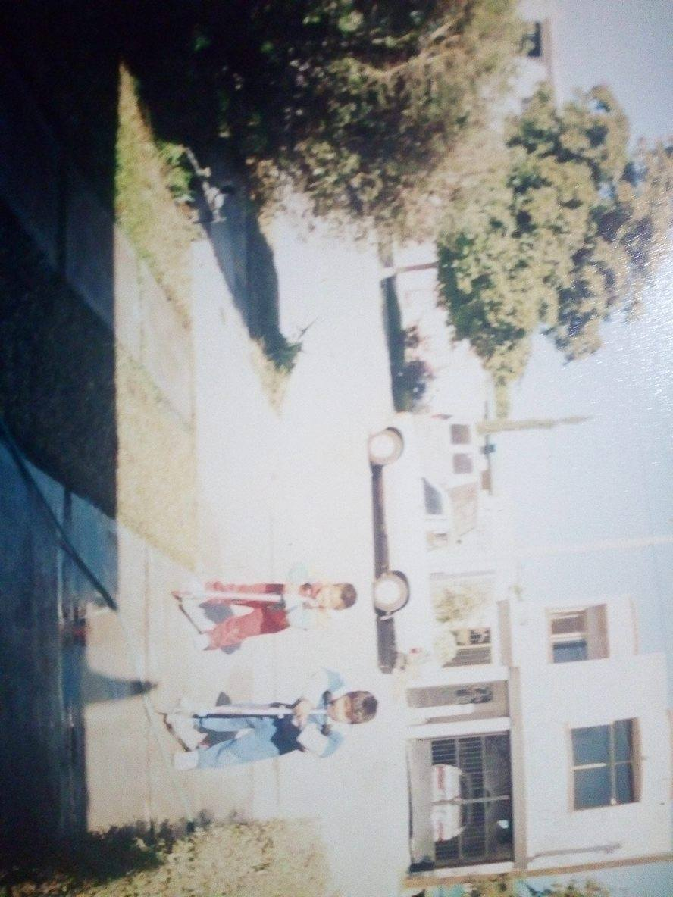
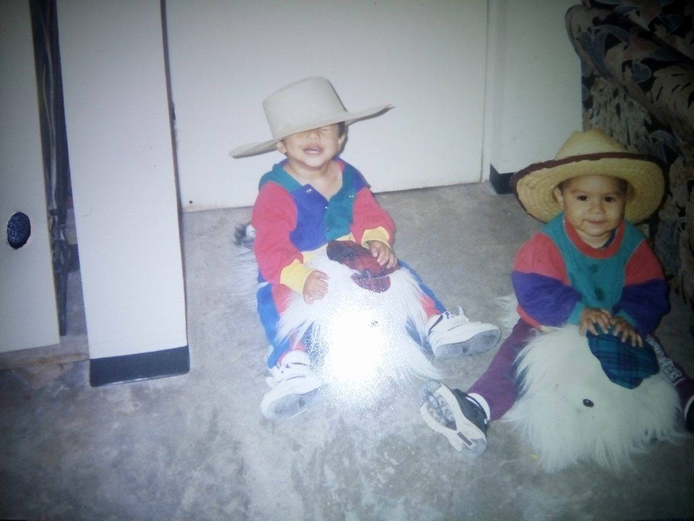

Mi primer amigo
Inicio
Mi primer amigo
 
  
De pequeño y era un niño que era muy timido y no me gustaba hacer muchas cosas que divertirme siempre estaba muy
apegado a mi madre, solo me gustaba hacer las cosas que me gustaban y era demasiado chiquin con mis cosas, solo
habia una persona con la cual me decian que podia jugar normalmente y era con mi primo victor que desde que tengo
memoria le llamamos "Gordo" de cariño ya que nacio era un bebe muy gordoy al lado mio yo era un bebe flaquito,su
nombre completo es Victor Ernesto Contreras Sanchez, el era como mi hermano ya que mi madre siempre lo cuidaba y
casi siempre estaba en la casa, con el tengo un moton de anecdotas que me cuentan mi padres eramos muy traviesos
y que haciamos cada cosa y que no podian dejarnos solos porque haciamos cada cosa por ejemplo que descompusimos el
voiler del agua porque le abrimos por accidente y pensabamos que esa cosa se estaba quemando por dentro y lo
apagamos con agua que por votes de plasticos hibamos corriendo a la cocina y lo vaciamos hasta apagar el voiler
y ya no sirvio, asi es una de las muchas cosas travesuras que hacia con el. Todo lo hacimos juntos hasta festejar
su cumple mi madre nos hacia trajes dependiendo de como era la fiesta por ejemplo una fue de power ranger y nos
vestimos de rojo y azul.Les platico esta parte de mi primo porque es lo mas recuerdo de mi niñes desde pequeño,
ahora le dire como era fisicamente y mi forma de ser de pequeño,era un niño flaquito y hasta la fecha cabezon,
siempre estaba enfermo desde siempre con alergias o con cada cosa que salia de enfermaedad que se propagaba a los
niños chicos yo la tenia o me contagiaba de ella , me decin que siempre tengo la cara de señor desde pequeño, no
era muy esprecivo con la gente y siempre me gustaba hacer cosas raras como observar las mariposas o cosas que a
mucha gente le parecia aburrido ami me gustaba hacer.